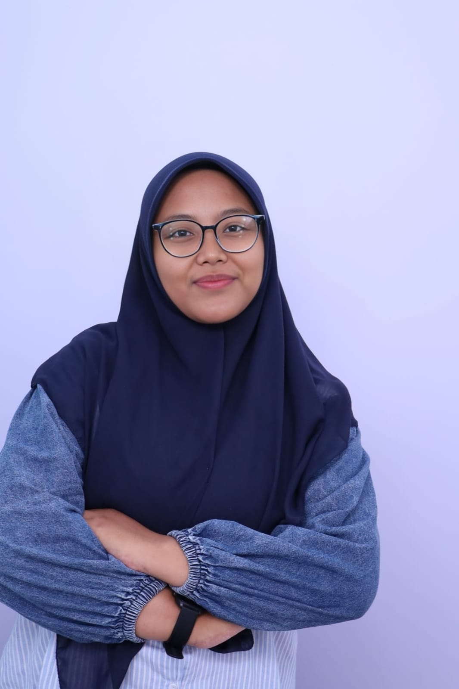

Program Edukasi
Merancang materi pembelajaran interaktif berbasis media visual untuk siswa sekolah dasar.
Hi, saya
Mahasiswa Pendidikan Bahasa Inggris
Saya sedang belajar menjadi guru yang kreatif, sabar, dan mampu membuat pembelajaran menyenangkan.
Mari BerkenalanSekilas tentang diri saya dalam dunia pendidikan.
| Nama | : | Salma Rahmadina Fathoni |
|---|---|---|
| NIM | : | 240122005 |
| Program Studi | : | Pendidikan Bahasa Inggris |
| Semester | : | 5 |
| Hobi | : | Membaca |

Saya percaya bahwa Bahasa Inggris adalah jembatan menuju peluang dunia yang lebih luas. Motivasi terbesar saya menjadi seorang guru adalah ingin membantu setiap siswa mengatasi rasa tidak percaya diri dalam berbahasa asing melalui metode pengajaran yang sederhana, kontekstual, dan menyenangkan. Setiap siswa memiliki potensi unik yang berhak didukung serta dirayakan perkembangannya.
Pengabdian dan kegiatan praktik pengajaran yang pernah saya laksanakan.
Merancang materi pembelajaran interaktif berbasis media visual untuk siswa sekolah dasar.
Menyusun media interaktif berbasis digital untuk meningkatkan keterlibatan siswa di kelas.
Aktif mengelola program kegiatan mahasiswa bertema kebahasaan dan pendidikan.
“Menjadi pendidik yang menginspirasi siswa untuk berani mengeksplorasi potensi diri, berpikir kritis, serta percaya diri berinteraksi di era global.”
Silakan hubungi saya untuk berbagi ide, masukan, atau berdiskusi seputar dunia pendidikan
Email: salma@example.com
Instagram: @ruangbelajarama